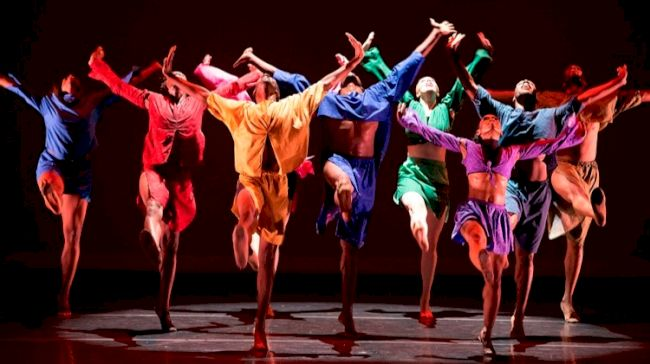

HISTORY
India and China: Dance throughout Asia has a rich history. While Hindu dancing in India has a rich performance history going back millennia, in the late 1700s, dance was restricted by British colonists, who considered the dances immoral. Once India gained its freedom from Great Britain, the country revived its classical dance traditions. Chinese dance dates back at least 3,000 years, with ceremonial dances and folk dances adapted for performance at court. To this day, celebrations still include traditional dances such as the dragon dance and lion dance.
European social dances: Social dancing in most parts of the world grew out of folk dances, many of which were simple and repetitive. In Europe, the folk dances of the Middle Ages turned into formal ballroom dancing. These dances moved into royal courts beginning in the Renaissance, becoming popular as dancing masters taught upper classes the proper steps for court dances. As women's clothing allowed more freedom of movement in the nineteenth century, social dancing became more lively. The waltz, in particular, swept around the world as a major dance craze in the mid-nineteenth century, and social dances began to focus on two-person dancing in the early twentieth century.
Influence of ballet: Much of the dance created by choreographers and composers and performed as professional entertainment today has its roots in ballet, which, in turn, dates back to the Renaissance. Ballet dance became an art in the eighteenth century, when ballet companies sprang up around the world, telling entire stories through the emotional movements of the ballet dancers. As shoes and costumes changed, dancers gained greater expressive freedom, but some ballet dancers found the rules (and the pointe shoes) of classical ballet restrictive. In the twentieth century, modern dancers and choreographers such as George Balanchine and Martha Graham began to deconstruct ballet to create new forms of performance dance.